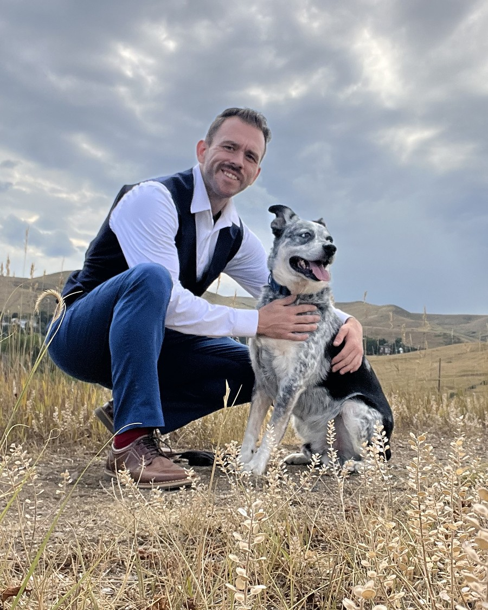

maveriQ B Jackson, in the foothills outside Lakewood.
My name is maveriQ B Jackson. I founded The Q Collective, and I write most of what you will find on this site. If you are going to hold our work to a standard, you should know whose work it is.
The lowercase m and the capital Q are not a typo, and they are not a brand exercise. Where a person starts does not decide anything. Where they finish does, and so does what they do on the way there. I have organized my life around that idea. I organized this work around it too.
Most of what The Q Collective publishes was written before The Q Collective existed. I wrote it while I was a government employee, watching how policy actually gets made. What I kept seeing was that the people a bill was supposed to help were usually the last ones anybody thought about, and often nobody in the room had ever lived the thing they were legislating.
So I started writing bills. Not opinion pieces. Not talking points. Actual legislation, with sections and funding mechanisms and legal defenses, built to survive committee and ready to be filed by anyone willing to carry it.
In 2026 I ran for House District 23. I did not make the ballot. I am telling you that here rather than letting you find it somewhere else, because the work never depended on me winning and it did not stop when I lost. The Q Collective is where that work lives now, permanently, and I am not a candidate for anything.
I should be straight about the size of this. The Q Collective is not a building full of analysts. It is me, a small group of volunteers who believe in the work, and a scoring engine that runs every Sunday afternoon. That is not an apology. It is so you know exactly what you are looking at when you read a score.
What I believe, plainly
Speak softly and carry a big stick. Treat everyone with respect, even the people who have not earned it. And when you stand for something, stand all the way through.
That last one is the reason the Q Score works the way it does. We grade every member of the Colorado General Assembly by one formula that is published in full and does not move. I do not get to lower the bar for someone who was kind to me or raise it for someone who was not. Nobody here does. The score is set by the rubric, and the rubric is public so you can argue with it.
I know what it looks like when an organization grades named public officials while staying faceless itself. It looks like people who want the authority without the exposure. So my name is on this, my face is on this, and my phone number is at the bottom of this page. If you think we got something wrong, you know exactly who to call.

What this organization will and will not do
- We do not endorse candidates. Not one, in any race, ever. The moment we do, every score we have ever published becomes an argument instead of a measurement.
- The rubric does not bend. Eighty points earns Accountability Champion. That line has never moved and it will not move for anyone, including people who agree with us.
- Corrections are published, not quietly patched. Every score change is logged in the public audit trail with the reason attached.
- Officials can respond, but they cannot edit. Any lawmaker we score can publish a reply in their own words on their own profile. They cannot change the number.
- Anyone can check us. The formula, the weights, the data sources and the change history are all public. You are not asked to trust the result. You are invited to verify it.
Come use this
If you have an idea for a law, bring it. If you want to know how your representative is actually doing, look it up. If you think we made a mistake, tell me and I will fix it in public. There is a door here for everyone, and it is genuinely open.
Look up your lawmakers Bring us an idea
team@theQcollective.org
970.725.6656
222 Wright St, Unit 102, Lakewood, CO 80228